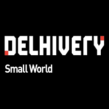

|
Varun Shah
I am a Computer Science graduate student at the University of Massachusetts at Amherst where I have been exploring the Data Science field. I have taken up courses like Natural Language Processing, Algorithms for Data Science and Advanced Information Retrieval.
Prior to my master's program, I worked as a software engineer for around 2 years.
This summer I interned with Confluent. Prior to starting the master's program, I worked as a full time engineer with Swiggy before which I had a short stint with Delhivery.
The little experience that I have gathered working as a software engineer in different domains has made me realize my interest towards building the scalable systems. I have worked with systems that require utmost consistency to systems where availability was the key. This has given me good exposure and perspectives to think of while building systems.
I did my undergraduate in Computer Engineering from the Dharmsinh Desai University in Nadiad where I devoted a lot of time developing algorithmic skills other than the course contents.
Email /
CV /
Twitter /
Github
|
|
|
|
Confluent
Software Engineering Intern, Summer 2023
Interned with the the control-plane-kafka team
Worked on data modelling for the Physical Cluter.
Migrated the API from monolithic service to the microservice.
Performed rigorous and extensive testing using a script that could be leveraged and deployed in pre-prod environment and also for doing load testing.
Languages & tools used: Golang, Kubernetes, Helm charts, PostgreSQL.
|
|
|
Swiggy
Software Development Engineer, January 2021 - Aug 2022
Worked with the Advertisement team.
Delivered a project that enabled ads banners on certain pages on the application. Identified a fatal flaw in the low-level(diamond problem) design which I corrected via data remodelling.
As part of ads-rearchitecture, I worked on enabling migration from (MySQL + Redis) to (DynamoDB + DAX) in the serving layer[real-time ads serving]. This involved emitting parity mismatches and making sure the Dynamo data was reliable for ads-serving.
While we moved to DynamoDB, due to the querying pattern, we encountered a lot of negative caching at DAX and also DynamoDB throttling. I initiated and owned a caching solution that was a work-around for this problem. This unblocked key critical projects.
Languages & tools used: Java, SpringBoot, Golang, MySQL, Redis, DynamoDB, DAX, Kafka
|
|

|
Delhivery
Backend Engineer, July 2020 - December 2020
Worked with the Middle-mile team.
Bootstrapped a service and added integrations with AWS Kinesis to consume the events and update the data in the DynamoDB table.
Wrote and owned the entire backend for the dock management system, bringing down operational costs. Improved the code quality adding good practices and refined the service from the extensibility point of view.
Languages & tools used: Python, Flask Restful, PostgreSQL, DynamoDB
|
|
|
Amazon AWS
Software Development Engineering Intern, January - July 2020
Interned with the infra-supply-chain-automation team.
Helped redesign the DynamoDB schema which enabled the support of one-many relationship between servers and it's components.
Took ownership of automating the cancellation of associated orders based on the cancellation of the parent order, which enhanced operational efficiency.
Languages & tools used: Java, Ruby, Rails, Spring, Dagger, DynamoDB, Lambda, MySQL, Cloudformation, Step-function, Cloudwatch, S3, SQS, SNS
|
Please checkout Jon Barron's website if you wish to use this Layout.
|
{kind=link}